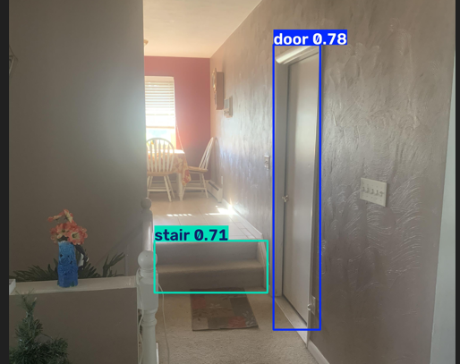

Fall 2026
Spatial Awereness for the Visually Impaired (S.A.V.I)
I'm working on a wearable device to help people with visual impairments identify objects and avoid obstacles around them. I'm responsible for the computer vision model, which I trained in PyTorch using over 3,100 images I collected and labeled. It runs on a small AI module and provides audio feedback to help guide the user.
Senior Design: PyTorch · Ultralytics YOLO · Roboflow · Edge AI · Python